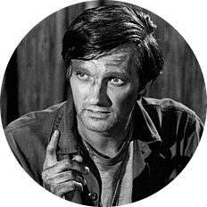

|  |
Benjamin Franklin PierceMASH 4077 Chief Surgeon His nickname, Hawkeye, comes from a character in the novel The Last of the Mohicans. He is portrayed by Donald Sutherland in the motion picture and by Alan Alda in the television show. |
| Dates | Work |
|---|---|
| 1951-1953 | Chief Surgeon MASH 4077 |
| 1947-1951 | Resident at Maine General Hospital |
| Drinking | ⭐️⭐️⭐️⭐️⭐️ |
| Girls | ⭐️⭐️⭐️⭐️ |
| Gambling | ⭐️⭐️⭐️⭐️⭐️ |